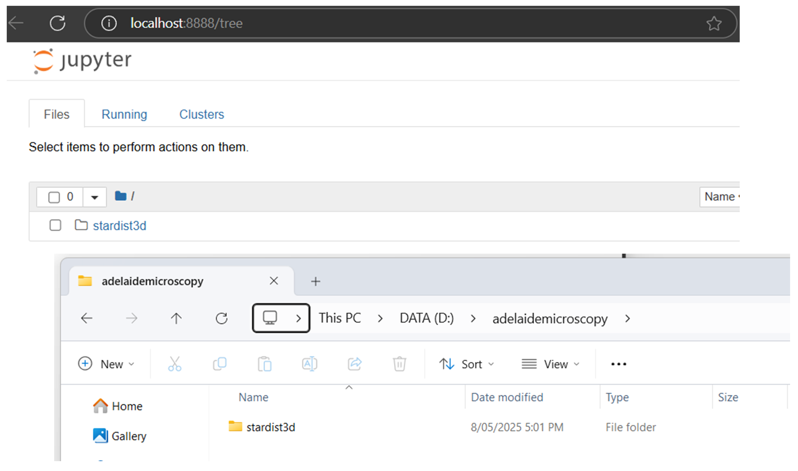

Training your StarDist 2D or 3D model on local GPU#
Warning
The files used in these instructions were last accessed on 9 Sept 2025. Changes may have since been made that affect installation. No guarantees are made that instructions will work on your own device.
This post is the first in a part of a series on StarDist for nuclear segmentation:
Set-up StarDist for model training on local GPU
<--- You are here!Training your own 2D/3D model on local GPU
Running trained and pre-trained StarDist models in napari. See stardist-napari.
Introduction#
StarDist(ref,ref) is a good candidate for accurate segmentation of cell nuclei in 2D and 3D datasets.
{kind=link}
Fig. 1 Nuclear segmentation using stardist versatile (H&E nuclei) model#
StarDist may provide reasonable models for nuclear segmentation out-of-the-box. However, sometimes it is necessary to train your own model for your microscopy data.
In the following procedure we will configure a PC with Windows 11 OS to train a 2D/3D StarDist model using the local system GPU.
Requirements#
The instructions in this documents were tested on Windows 11 OS devices with one of the following NVIDIA GPUs:
GeForce RTX 3070
RTX A2000
RTX A5000
Quadro P4000
Tools#
IMPORTANT: You will need administrative privileges on your computer. Contact your IT department for support.
In the following procedure, we will install the following:
miniforge
TensorFlow 2.10.0
this is the final version of tensorflow with official GPU support via pip on Windows
StarDist 0.8.5
napari 0.4.18
Instructions#
1 Install Miniforge#
Detailed instructions to set-up Miniforge on your own device are available from Mara Lampert at TU Dresden via the following link: Getting started with Miniforge and Python
Follow these instructions to install Miniforge and Python (stop before ‘Using Conda’ as you will create your own Conda environments in the steps below).
2 Create custom Conda environment for StarDist training#
We will now use Mamba, a fast drop-in replacement for Conda, to create our first Conda environment.
2.1 Open the Miniforge Prompt (press the Windows key, type Miniforge Prompt, and press Enter)
When you open the prompt window, it should look like the below image.

As shown in the image, you are in the (base) environment. From here we will create a custom Conda environment to train our own StarDist model using the local device GPU.
2.2 Create the custom Conda environment stardist-train and install cudatoolkit and cudnn packages as required for GPU support.
Copy the following command in the Miniforge Prompt and press Enter:
mamba create -n stardist-train python=3.8 pip cudatoolkit=11.2 cudnn=8.1.0 -y
This process may take a few minutes while downloading and extracting the required packages.
2.3 Run the following command to activate the environment.
mamba activate stardist-train
In the Miniforge Prompt, you will see that you have now entered the stardist-train environment.
2.4 Run the following commands to install the specified versions of TensorFlow, NumPy, gputools and StarDist that are compatible for running StarDist with GPU support. Enter each command line-by-line and press enter.
pip install tensorflow==2.10
pip install numpy==1.23.5
pip install stardist==0.8.5
pip install gputools==0.2.15
2.5 Confirm that Tensorflow can detect the system GPU. In the active stardist-train environment, run the following Python code:
python -c "import tensorflow as tf; print('Num GPUs Available:', len(tf.config.list_physical_devices('GPU'))); print(tf.config.list_physical_devices('GPU'))"
✅Expected output (if the GPU is detected):
Num GPUs Available: 1
[PhysicalDevice(name='/physical_device:GPU:0', device_type='GPU')]
❌If GPU is not detected:
Num GPUs Available: 0
[]
If your GPU is not detected you can refer to the following troubleshooting checklist (INSERT LINK).
3 Install Jupyter#
We will install Jupyter in the stardist-train environment so that we can train our own StarDist models using Python notebooks provided on the StarDist github repository.
3.1 In the active stardist-train environment, run the following command to install Jupyter:
mamba install jupyter
3.2 Run Jupyter notebook with the command:
jupyter notebook
A new browser window will open with the address localhost:8888/tree. This is the jupyter notebook landing page when you run notebook locally.
By default, the file browser interface opens to the location from where you launched jupyter notebook, e.g., C:\Users\USERNAME\.
3.3 You can specify the drive when launching Jupyter Notebook to change the directory. For example, to open notebook to my adelaidemicroscopy folder on the secondary drive D:, I would enter the below command:
jupyter notebook --notebook-dir=D:/adelaidemicroscopy

3.4 To close Jupyter notebook, go to the Miniforge Prompt and press Ctrl+C.
The terminal should now return to the (stardist-train) environment.
Testing your Jupyter installation#
We can test our installation using example notebooks and sample data provided by the StarDist team from the links below. Examples are provided for both 2D and 3D data:
4.1 Download each of the 1_data.ipynb, 2_training.ipynb and 3_prediction.ipynb files.
To download an .ipynb file from GitHub:
a. Click the filename to open it.
b. Click the “Raw” button (near the top right corner)
c. Press Ctrl+S to save the page, or right-click and choose “Save As…”
Ensure that the file extension is
.ipynb.Set
Save as type:toAll files
In the example below, we have saved the StarDist3D example files to the D:\adelaidemicroscopy\stardist3d\ folder.
Note
I haved used StarDist 3D as an example but the instructions that follow apply equally to both the StarDist 2D and StarDist 3D notebooks.
4.2 Launch Jupyter Notebook pointing to our .ipynb files:
jupyter notebook --notebook-dir=D:/adelaidemicroscopy/stardist3D/
4.3 In the file browser, navigate to the 1_data.ipynb file and click to open.
4.4 Run the whole notebook (click Cell and select Run All).
This notebook will now download a sample dataset within a folder called data and save it next to the 1_data.ipynb file, e.g. located in the D:\adelaidemicroscopy\stardist3d\data\.
4.5 You can close the 1_data.ipynb browser window once the notebook run is complete.
4.6 Run the 2_training.ipynb notebook
We will run the 2_training.ipynb notebook to train our own StarDist model using the sample data that we downloaded running 1_data.ipynb.
Click the 2_training.ipynb file to open the notebook.
4.7 By default, the notebook is configured not to use gputools. To use gputools search in the notebook for the following line:
use_gpu = False and gputools_available()
And change this to:
use_gpu = gputools_available()
4.8 Update the limit_gpu_memory(fraction) function.
Search the notebook for the following line:
limit_gpu_memory(0.8)
And change this as appropriate for the actual memory in your GPU:
# Replace 8192 with the actual memory of your GPU in MB (e.g., 24GB = 24576).
limit_gpu_memory(fraction=0.8, total_memory=8192)
4.9 Update the model name
Search the notebook for the following line:
model = StarDist3D(conf, name='stardist', basedir='models')
Replace the model name and the basedir (optional) to something meaningful. Models will be saved in the basedir folder.
model = StarDist3D(conf, name='example_model', basedir='models')
4.10 Run the whole notebook as a quick demonstration (click Cell and select Run All).
Note
By default, the notebook is written to run a quick demonstration. We will leave it as is for now. The next post is this series will describe configuring your own notebook for full training.
4.11 Confirm that stardist training is using your local GPU
If your environment and notebook was configured correctly, then the demo should use your system GPU. You can confirm this in Task Manager.
a. Open Task Manager. Press Ctrl+Shift+Esc.
b. Click on the Processes tab.
c. Right-click on any of the column headings (e.g., “Name”, “CPU”). From the list, select “GPU” to add as a column.
d. Look for the python.exe app. When the notebook is training you should see an increase in the GPU %.
{kind=link}
Fig. 2 GPU usage shown for python.exe in the Task Manager during model training#
Once the notebook run is complete, a folder called example_model, will be saved in the models folder. This is located alongside the data folder and our .ipynb files. E.g., located in D:\adelaidemicroscopy\stardist3d\models\example_model\
4.12 Now close Jupyter notebook and exit the stardist-train environment
Go to the Miniforge Prompt and press Ctrl+C.
The terminal should now return to the (stardist-train) environment. Enter the below command to return to the (base) environment:
mamba deactivate
Proceed to the next section to Train your own StarDist model (documentation in preparation).